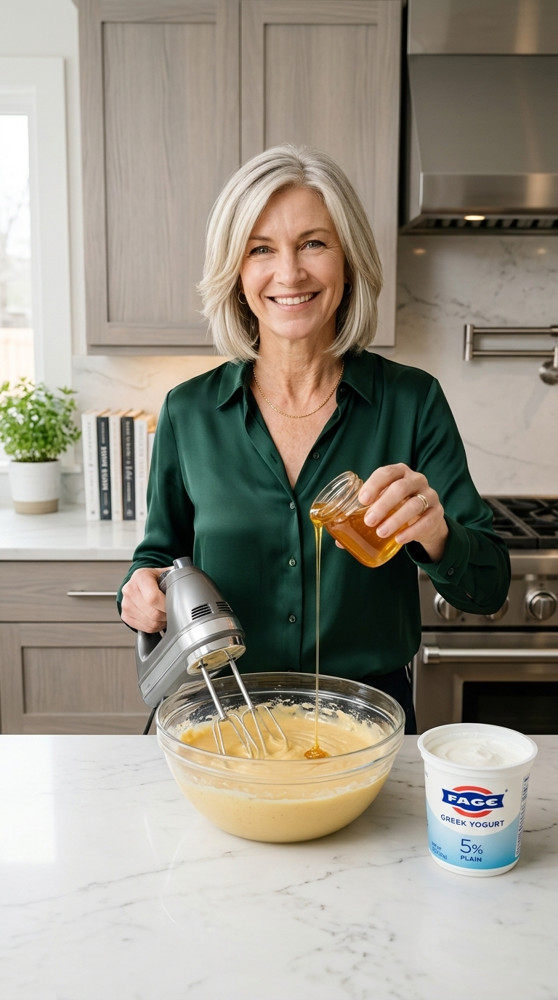
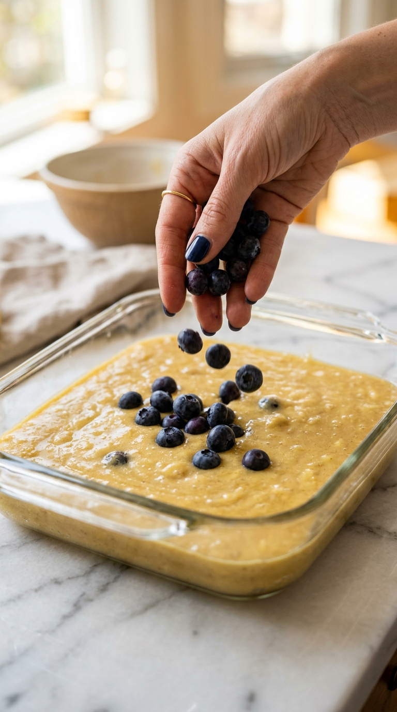

Ingredients
Servings
6
Simple ingredients. Extraordinary results.
Step-by-Step Instructions
Easy • 5 Steps
1
Preheat Oven & Line Loaf Pan
Preheat your oven to 350°F (175°C). Line a standard rectangular loaf pan with parchment paper, leaving about an inch of overhang on the sides for effortless lifting.
2
Mash Bananas & Whisk Batter
In a mixing bowl, mash the 3 peeled ripe bananas thoroughly with a fork until silky. Crack in the 3 eggs, then add the Greek yogurt and raw honey. Whisk vigorously for 60 seconds until the batter is glossy, creamy, and golden.
3
Fold Fresh Blueberries
Gently fold in 1 cup of fresh blueberries using a spatula. Be gentle so the berries stay whole and plump. Pour the creamy batter into your lined loaf pan, then scatter the remaining 1/2 cup of blueberries across the top.
4
Bake to Golden Perfection
Bake on the center rack for 28 to 30 minutes, until the top is puffed, lightly golden, and a toothpick inserted into the center emerges clean.
5
Cool, Slice & Serve
Allow the loaf to cool in the pan for 10 minutes, then lift using the parchment paper onto a cutting board. Cut into 6 generous vertical slices and serve warm!

Whisking bananas, eggs & Greek yogurt

Folding juicy blueberries into the loaf